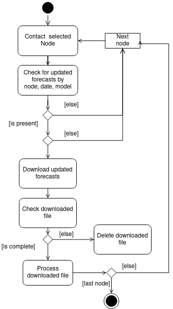
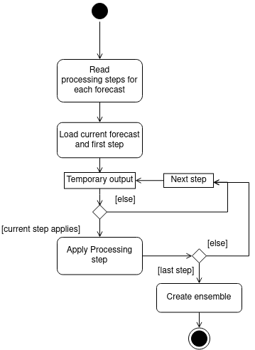

Software description¶
Inputs¶
To run the MMES software you need to provide
- a list of sources sources.json: each source can provide one or more models for one or more variable
- a mask file with the final grid you want to get
- [optional] a wheights file for each model that needs to be spatially interpolated to fit the multi-model ansemble
- a small amount of configuration information (directory in which all data will be available, variable to be considered …) see [General Configuration] section
Directory structure¶
The application directory has python scripts and a subdirectory ‘’’scripts’’’ with bash scripts used to download special sources or called by subprocess during program execution
The data directory should have the following structure:
Inside MMES directory will be placed the daily ensemble produced and inside the MMES/history directory will be stored the old ensamble cutted to first 24 hour The name of the ensemble can be setted in config.json file, thus the MMES directory will take the enemble name instead.
If not already presente the directory structure is automatically created by the management command:
python manage.py dir
1. Retrieve and download phase¶

The source forecasts are provided in different formats and from different types of sources (ftp or http or other). The diagram of the download stage of MMES software is shown in Figure 1. The Daily forecasts are usually published in the morning, but they are not available at the same time and therefore the software contacts all source nodes at regular intervals and checks if the current file is available. If the file is already downloaded and processed the software will pass to the next node. For http sources the exact path of the file to download is needed, for ftp sources the software needs the directory name and filename. The naming schema of the files is different for each provider but usually can be constructed using a constant pattern and current date value.
If the download process is interrupted due to network issues or other causes, the file can be incomplete and not suitable to create the ensemble. The forecast duration is checked after download (start time, end time) to ensure that it covers at least the time period of the ensemble (2 days), otherwise the file is deleted so it can be downloaded on the next cycle. If the download process is interrupted due to network issues or other causes, the file can be incomplete and not suitable to create the ensemble. The forecast duration is checked after download (start time, end time) to ensure that it covers at least the time period of the ensemble (2 days), otherwise the file is deleted so it can be downloaded on the next cycle.
2. Processing phase¶

If the file is valid, the software will pass to the processing phase. The diagram of the processing stage of MMES software is shown in Figure 2. Each forecast has to be processed in a different way: all the possible steps are implemented in the code (e.g. merge or split variables, rename variables, spatial interpolation on the final grid, temporal interpolation, add tide and offset for sea level, invert wave direction and so on). The processing steps and relative parameters required for each forecast are declared in the configuration files as a JSON object. On each step, a temporary output file is created: the Python cdo wrapper library manages temporary filenames and makes available the data as a Python variable, then clears all temporary files at the end. Then the result is saved as a NetCDF file inside the component’s directory. At the end of each processing cycle, the software goes to the ensemble creation phase. The configuration of different processing steps for each variable is the most important part of configuration. See Processing steps Configuration for details.
3. Ensemble creation phase¶

The general configuration sets a minimum number of files for the ensemble creation: the ensemble output is overwritten on the next cycles adding more forecasts, when available (last execution is scheduled at 14.00). The diagram of the ensemble precaution stage of MMES software is shown in Figure 3. All numerical model results are interpolated, through a distance-weighted average remapping of the nearest neighbours, on a common regular lat-lon grid covering the Adriatic Sea with a resolution of 0.02 deg. For coastal flooding hazard purposes, the total sea level height must be forecasted. Therefore, the astronomical tidal level values obtained by a specific SHYFEM application over the Mediterranean Sea (Ferrarin et al., 2018) are added to the residual sea level simulated by the operational systems not accounting for the tide (e.g. SHYMED, ISSOS). The obtained sea level heights simulated by the different models are all referred to the geoid.
Figure 3: Diagram of ensemble creation stage of MMES software. The CDO library provides simple commands to compute the mean and standard deviation of a variable. For the wave ensemble we have three different variables, wave significant height, wave period and wave direction: the wave direction is expressed in degrees and must be splitted in the U and V components, then merge the ensembles again. The ensemble forecast duration is 2 days with 48 hourly timesteps, but users can set a different duration in configuration files. When the new ensemble is ready, the previous day is trimmed to the first 24h hours and archived in the history folder: the Thredds data server will publish the whole collection so can be downloaded a subset of custom duration for the past multi-model files.
MMES Outputs¶
MMES produces 2-day (duration is defined in mes_functions.py L95 )probabilistic forecasts in terms of the ensemble mean and standard deviation for both the sea level height and wave over the whole Adriatic Sea and part of the Ionian Sea. The spread (i.e. standard deviation) among the operational simulations is expected to represent a measure of the uncertainty of the prediction and should be linked to the forecast error so that cases with the largest spread are those with the highest uncertainty and where a large error of the ensemble mean (and also of the deterministic forecast) is more likely (Flowerdew et al., 2010). It is not straightforward what averaging weights should be used for the multi-model ensemble forecast and therefore we used equally weighted ensemble members, despite the forecasts which are more precise than others should have more importance in the MMES (Salighehdar et al., 2017; Schevenhoven and Selten, 2017). Here we applied a simple average of the forecasts at every timestamp to compute the ensemble mean, but more sophisticated methods based on weighting function determined by comparison of the single model results with near real-time observations will be implemented in future (Di Liberto et al., 2011; Salighehdar et al., 2017). Taking advantage of the near real-time observations acquired by the aggregated monitoring network, the root mean square error of the individual forecast will be next evaluated and stored for long-term statistics. MMES forecasts are produced each day. MMES outputs (in terms of ensemble mean and standard deviation of the sea level and waves) in NetCDF format are available to the end-users and external portals through the CNR-ISMAR Thredds Data Server at the webpage’s url https://iws.ismar.cnr.it/thredds/catalog/tmes/catalog.html. The results of the multi-model ensemble system can be visualized via the I-STORMS Geoportal web interfaces (https://iws.seastorms.eu/). The results will be next delivered through the STREAM International Flood Platform.